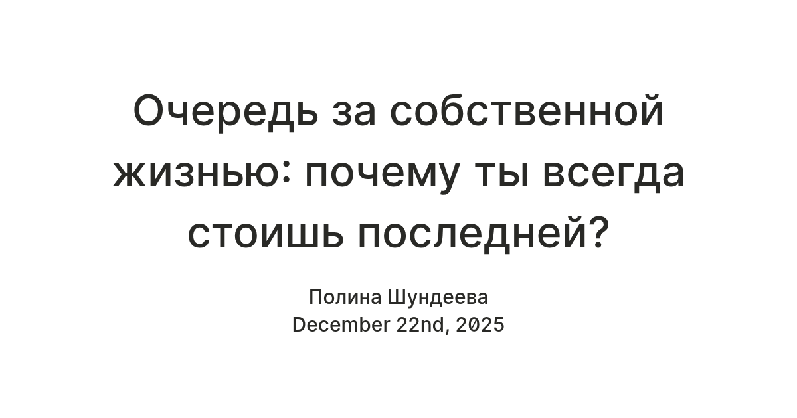
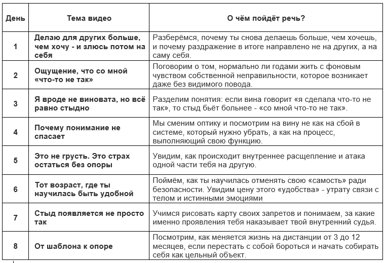

Почему это не похоже на всё, что ты видела раньше?
Это не очередной курс по «достигаторству» или «позитивному мышлению», от которых ты уже смертельно устала. Мы не будем строить «счастливое будущее» на гнилом фундаменте из чувства долга. Это пространство, где тебе не нужно быть «лучшей версией себя», не нужно «блистать» или доказывать, что ты мастер по выживанию.
Мы уберем «бульдозер», которым ты каждый день проверяешь свою ценность на прочность.
Что ты получишь в итоге?
- ✓ Свободу от «оценки»: Возможность просто «полежать на травке» без внутреннего дискомфорта и грызущего чувства вины за «бесполезность».
- ✓ Мир вместо войны: Работа перестанет быть «сражением», где каждое утро ты берешь воображаемый автомат и идешь защищаться от обесценивания.
- ✓ Право быть собой: Ты перестанешь быть «функционалом» для мамы или начальника и начнешь чувствовать себя Человеком, чьи желания важны.
Как поверить, что это реально?
Доказательство — это не скриншоты чужих миллионов, а тот момент, когда ты впервые за три года просыпаешься без тревоги. Когда ты можешь сказать «нет» и не чувствовать себя «предательницей». Это истории женщин, которые тоже чувствовали себя «челядью» и «запасными игроками», но смогли закрыть дверь «коридора ожидания» и войти в свою жизнь.
В чем истинная причина твоих неудач?
Корень не в «лени», как тебе внушали в детстве. Твой главный враг — дар всё портить, когда всё хорошо. Ты воспринимаешь счастье как нечто хрупкое и опасное. Как только в жизни наступает штиль, ты берешь «топор» и ломаешь «трубу», чтобы вернуться в привычный режим «ремонта и выживания». Тебе понятнее, когда плохо — тогда ты знаешь, как контролировать хаос.
Кто на самом деле виноват?
Виновата система «оценки по результату», в которой тебя растили. Тебе выставили «счет за всю жизнь», заставив верить, что любить тебя можно только как «функцию» (спасти, привезти, решить), а не как Сашу. Твое нынешнее упрямство — это не порок, а единственная защита, которую ты нашла, чтобы тебя не «стерли» окончательно.
Почему нельзя ждать?
Половина жизни уже прошла в «ожидании в коридоре». Можно и дальше тратить годы на попытки «заслужить» признание тех, кому это не нужно, но твой внутренний ресурс не бесконечен. Либо ты заходишь в свой «дом» сейчас, либо продолжаешь смотреть из окна общаги, как другие запускают свои салюты.
Почему мне можно верить?
Я знаю, как это — быть «бараном», которого постоянно нужно поворачивать, и как не видеть смысла в своей работе. Я не теоретик с дипломом, я практик. Сама также прошла путь от депрессии и тяжелых мыслей до создания собственной системы жизни, выходила из таких же «руин» и перестраивала прогнивший деревянный фундамент на бетонный. Я продолжаю свою терапию и прохожу супервизии.
Как именно это работает?
Я не буду «учить тебя жить» — тебя и так все поучают. Мы создадим «мостик» между твоим Ложным Я (удобной девочкой) и Реальным Я. Это пошаговое перепрошивание рефлексов: от автоматического замирания к осознанному выбору.
Откуда взялась эта система?
Она родилась из сотен часов «монологов в яме» и рефлексии в моменты ярости и бессилия. Система проверена в ситуациях, когда кажется, что ты «осиротела» и «одна против целого войска».
Микро-курс «Как забрать пульт управления своей жизнью в свои руки»
Серия из 8 видеоуроков, которые выходят через день в моем Telegram-канале.

FAQ (А что если?)
«А если я опять всё испорчу?»
Это часть пути. Изменения — это постепенное перепрошивание связей.
«Мне стыдно просить о помощи».
Стыд — это сигнал, что ты нарушила правила своего Критика. Мы научимся использовать его как карту, а не как приговор.
«А вдруг я узнаю о себе что-то совсем ужасное?»
Ужасно не знать правду и быть рабом привычек. Узнать себя — значит обрести силу и перестать себя бояться.
«Я уже пробовала ходить к специалистам, не помогло»
Возможно, ты искала «маму», которая погладит по головке. Мы же будем растить твоего внутреннего взрослого.
«Это слишком сложно»
Сложно жить в аду самобичевания. А понимать себя — это навык, который нарабатывается, как езда на велосипеде.
Что случится, если ты скажешь «нет»?
Ничего не менять
Продолжать ходить на работу как на войну и плакать по вечерам. Жизнь проходит мимо.
Сама по себе
Риск укрепить стены, натаскав новых терминов, но оставшись всё той же запертой.
Путь изменений
Ты потеряешь иллюзорную «корону» Бога, но взамен обретешь Себя. Настоящую и живую.